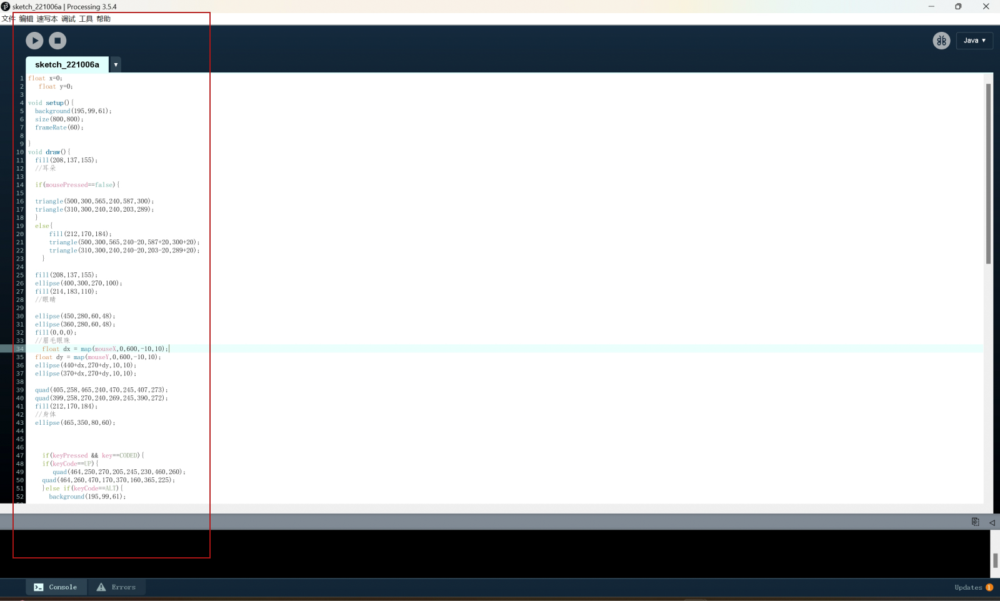
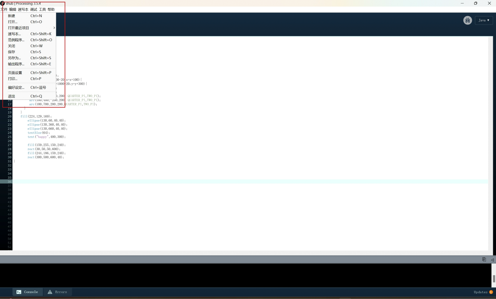
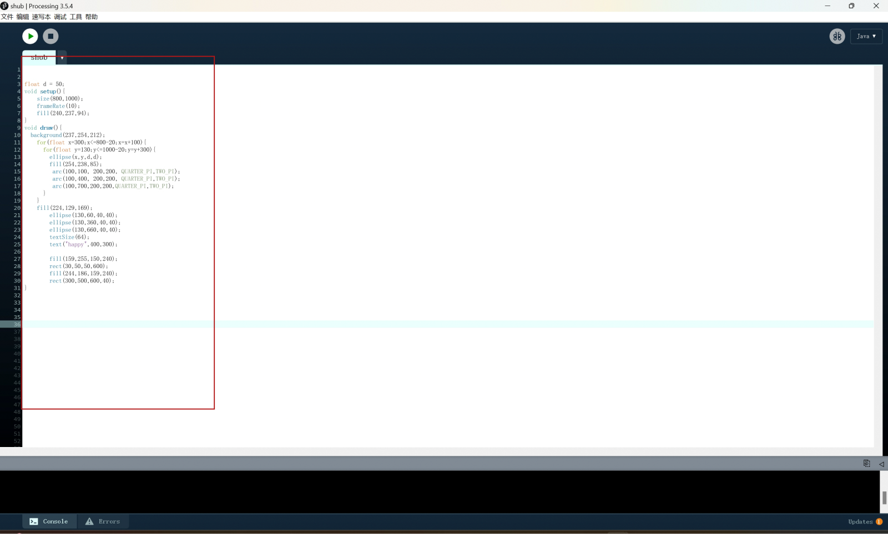
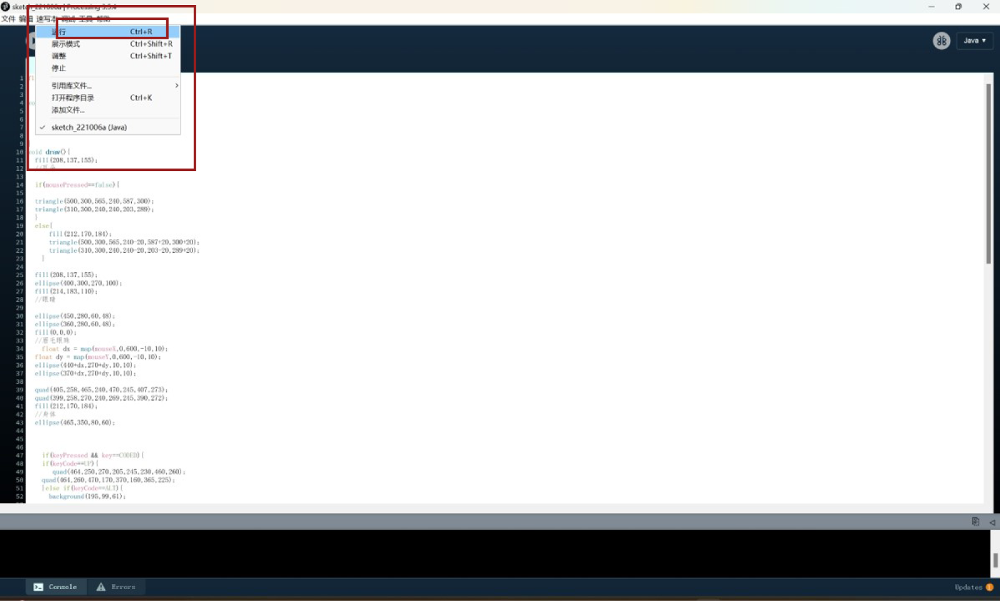

*Sketch
*PDE
*Texteditor
*Console
*Demo in processing
Processing
*Definition processing
*How to download
1 Since Processing is based on Java, please ensure that your computer
has configured the Java environment, otherwise Processing will not
work properly.
Processing latest version download address: http://processing.org/download
Processing is open source software. Developers will ask if you donate money to them before downloading. My suggestion for this is: donate some money if you have money.Right!Of course, "No Donation" can be swallowed directly to the download link, and "Download" to enter the download page:
Select the version that is suitable for your computer and click Download.
JDK package download: http://java.sun.com
Netizens provide environmental configuration tutorials: http:/wenku.baidu.com/view/a2e732caalc7aaob52acb9b.html
3 Unzip the installation package
4 Open processing.exe:
Finished! You have swallowed the development environment PDE of Processing. Create a desktop shortcut for processing.exe, which can be used conveniently in the future.
Processing latest version download address: http://processing.org/download
Processing is open source software. Developers will ask if you donate money to them before downloading. My suggestion for this is: donate some money if you have money.Right!Of course, "No Donation" can be swallowed directly to the download link, and "Download" to enter the download page:
Select the version that is suitable for your computer and click Download.
JDK package download: http://java.sun.com
Netizens provide environmental configuration tutorials: http:/wenku.baidu.com/view/a2e732caalc7aaob52acb9b.html
3 Unzip the installation package
4 Open processing.exe:
Finished! You have swallowed the development environment PDE of Processing. Create a desktop shortcut for processing.exe, which can be used conveniently in the future.
The creator of Processing is regarded as a sketchbook of code, where you can
draw with code. Therefore, the project of Processing is also very literary
and artistically named "Sketchbook" - Sketch
Select Sketch->Show Sketch Folder to open the current project file directory.
Select Sketch->Show Sketch Folder to open the current project file directory.

Create a new and open and save output application


Processing organises the code editing area with tab tabs, and each tab
actually corresponds to a code source file in .pde format.Click the small
drop-down arrow on the right to operate on the tabs.
When you open processing.exe, Processing creates a project for you by default (known in ProcessingSketch), and create a tab named "sketch_+current date + sequential number" for you. ChooseSketch->ShowSketchFolder, you can see the current project file directory. This is the state of temporary storage of the project. You can change the name and save it.
When you open processing.exe, Processing creates a project for you by default (known in ProcessingSketch), and create a tab named "sketch_+current date + sequential number" for you. ChooseSketch->ShowSketchFolder, you can see the current project file directory. This is the state of temporary storage of the project. You can change the name and save it.
Above the black area is the information area, where the PDE status,
error information, etc. during operation will be displayed here;
The black area is the console;
The bottom is the current number of lines.
The black area is the console;
The bottom is the current number of lines.
*Try simple shapes
point()
: Draws a point.
line() : Draws a line.
rect() : Draws a rectangle.
ellipse() : Draws an ellipse or circle.
triangle() : Draws a triangle.
quad() : Draws a quadrilateral.
arc() : Draws an arc.
bezier() : Draws a Bezier curve.
curve() : Draws a smooth curve
line() : Draws a line.
rect() : Draws a rectangle.
ellipse() : Draws an ellipse or circle.
triangle() : Draws a triangle.
quad() : Draws a quadrilateral.
arc() : Draws an arc.
bezier() : Draws a Bezier curve.
curve() : Draws a smooth curve
*Example

The sketch paper in this sketchbook, that is, the source file of
Processing, is a .pde file, which is displayed in the form of a tab in
PDE. The name of the tab is the name of the pde file. There is a main tab
in each sketch. This tab has the same name as the directory
folder.Processing program entrance.
Processing Code:
copy
background(239,175,248);
size(800,600);
fill(236,197,108);
rect(250,100,50,150);
fill(236,223,108);
triangle(400,100,700,300,100,300);
quad(100,300,600,600,600,600,600,600);
rect(200,300,400,300);
fill(300,300,300);
ellipse(500,400,100,100);
fill(200,100,50);
rect(250,400,100,300);
fill(90,15,30);
rect(0,400,300,50);
rect(20,350,50,600);
rect(100,350,50,600);
rect(260,350,50,600);
fill(149,189,218);
ellipse(200,100,100,50);
fill(205,230,228);
ellipse(150,50,50,50);
Processing Code:
copy
float x = 0;
float y = 0;
void setup() {
background(195, 99, 61);
size(800, 800);
frameRate(60);
}
void draw() {
fill(208, 137, 155);
//耳朵
if (mousePressed == false) {
triangle(500, 300, 565, 240, 587, 300);
triangle(310, 300, 240, 240, 203, 289);
} else {
fill(212, 170, 184);
triangle(500, 300, 565, 240- 20, 587 + 20, 300 + 20);
triangle(310, 300, 240, 240 - 20, 203 - 20, 289 + 20);
}
fill(208, 137, 155);
ellipse(400, 300, 270, 100);
fill(214, 183, 110);
//眼睛
ellipse(450, 280, 60, 48);
ellipse(360, 280, 60, 48);
fill(0, 0, 0);
//眉毛眼珠
float dx = map(mouseX, 0, 600, -10, 10);
float dy = map(mouseY, 0, 600, -10, 10);
ellipse(440 + dx, 270 + dy, 10, 10);
ellipse(370 + dx, 270 + dy, 10, 10);
quad(405, 258, 465, 240, 470, 245, 407, 273);
quad(399, 258, 270, 240, 269, 245, 390, 272);
fill(212, 170, 184);
//身体
ellipse(465, 350, 80, 60);
if (keyPressed && key == CODED) {
if (keyCode == UP) {
quad(464, 250, 270, 205, 245, 230, 460, 260);
quad(464, 260, 470, 170, 370, 160, 365, 225);
}
} else if (keyCode == ALT) {
background(195, 99, 61);
fill(212, 170, 184);
quad(464, 250 - 60, 270, 205 - 60, 245, 230 - 60, 460, 260 - 60);
quad(464, 260 - 60, 470, 170 - 60, 370, 160 - 60, 365, 225 - 60);
}
quad(330, 380, 360, 390, 280, 660, 250, 665);
fill(208, 137, 155);
//右手
ellipse(310, 320, 60, 60);
ellipse(320, 330, 60, 65);
ellipse(330, 340, 50, 65);
if (keyPressed) {
if (key == 'y' || key == 'k') {
} else {
ellipse(310, 320, 60, 60);
ellipse(320, 330, 30, 120);
ellipse(330, 340, 50, 65);
}
}
bezier(280, 310, 250, 330, 312, 399, 350, 370);
fill(212, 170, 184);
quad(280, 660, 230, 665, 330, 350, 350, 370);
quad(330, 345, 484, 340, 600, 600, 380, 650);
bezier(330, 350, 300, 450, 460, 400, 450, 350);
bezier(310, 370, 350, 280, 420, 285, 480, 345);
fill(201, 103, 129);
triangle(400, 277, 430, 308, 370, 300);
fill(175, 81, 99);
//鼻子
triangle(430, 308, 370, 300, 380, 340);
line(380, 340, 383, 358);
line(310, 370, 383, 358);
line(480, 345, 383, 358);
line(433, 320, 500, 310);
line(435, 327, 510, 320);
line(437, 330, 512, 340);
line(360, 320, 242, 310);
line(358, 327, 242, 325);
line(360, 340, 240, 350);
fill(212, 170, 184);
ellipse(430, 450, 20, 20);
ellipse(437, 490, 20, 20);
line(470, 400, 524, 555);
line(524, 555, 440, 570);
line(524, 555, 535, 550);
line(524, 555, 538, 558);
line(535, 550, 555, 560);
line(538, 558, 565, 576);
fill(208, 137, 155);
ellipse(340, 600, 100, 70);
ellipse(365, 600, 100, 70);
ellipse(375, 600, 80, 70);
line(440, 570, 442, 630);
quad(440, 580, 442, 630, 370, 635, 370, 568);
fill(183, 60, 36);
quad(0, 637, 700, 600, 680, 800, 0, 800);
line(445, 399, 480, 430);
}
*Do one demo in processing and arduino
Kinect
Kinect can directly connect to the PC of the Windows system and communicate with the computer through the USB interface to realise the transmission and reception of data.
Leap Motion
Leap Motion connects to the computer through the USB interface to realise the transmission and reception of data.
lot
Interconnection between devices: IoT devices can transmit and receive data through various communication protocols (such as Wi-Fi, Bluetooth, ZigBee, etc.) to realise the interconnection between devices.
* And the cloud platform: IoT devices can send the collected data to the cloud platform for storage and analysis. At the same time, the cloud platform can also send control instructions to IoT devices to realise remote monitoring and control.
Kinect can directly connect to the PC of the Windows system and communicate with the computer through the USB interface to realise the transmission and reception of data.
Leap Motion
Leap Motion connects to the computer through the USB interface to realise the transmission and reception of data.
lot
Interconnection between devices: IoT devices can transmit and receive data through various communication protocols (such as Wi-Fi, Bluetooth, ZigBee, etc.) to realise the interconnection between devices.
* And the cloud platform: IoT devices can send the collected data to the cloud platform for storage and analysis. At the same time, the cloud platform can also send control instructions to IoT devices to realise remote monitoring and control.
*Try to communicate with Kinect, Leapmotion or IOT platform
*Interpret and implement design and programming protocols to create a
Graphic User Interface